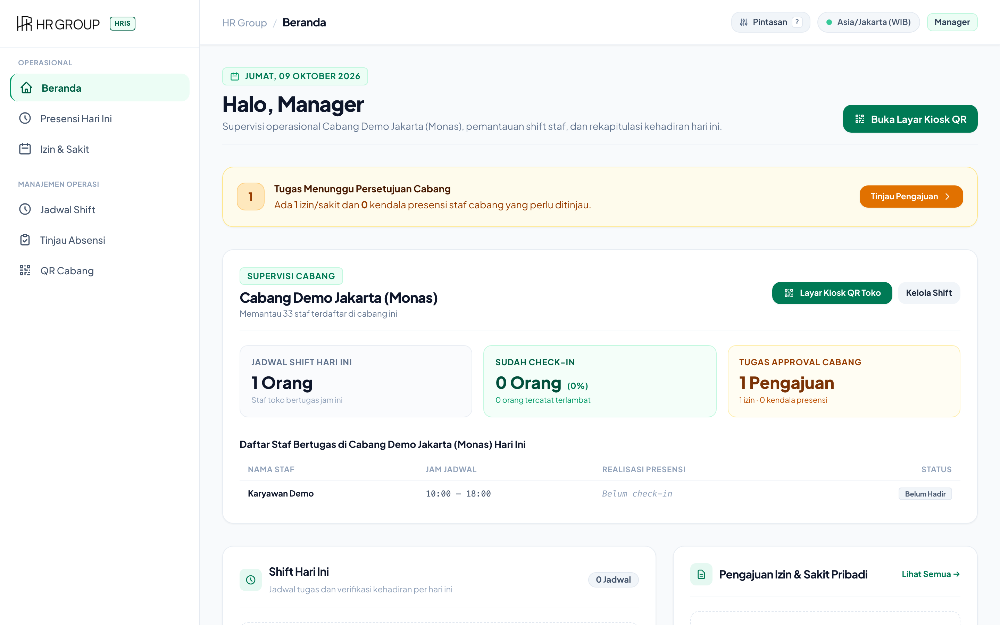
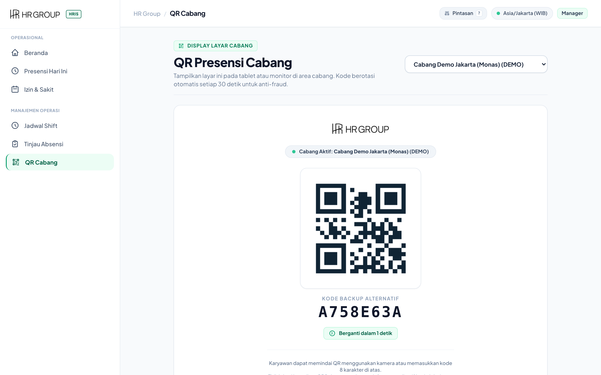
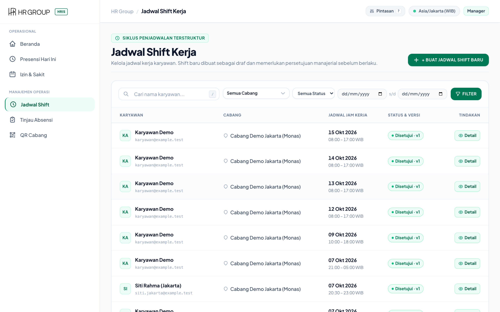
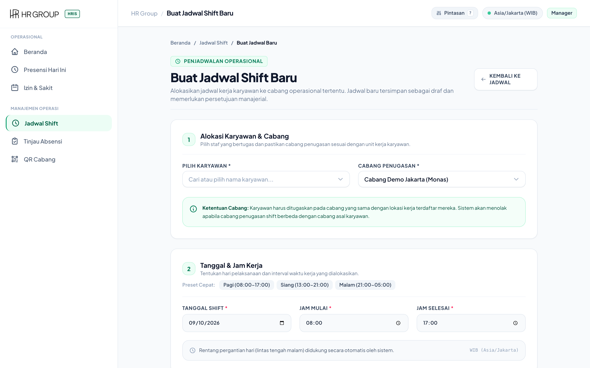
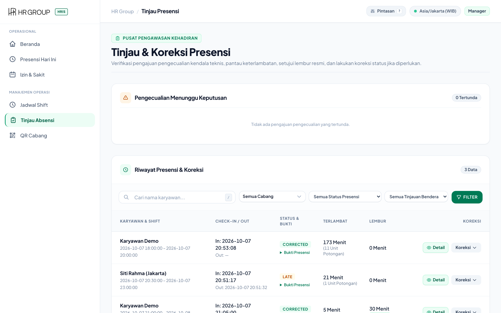
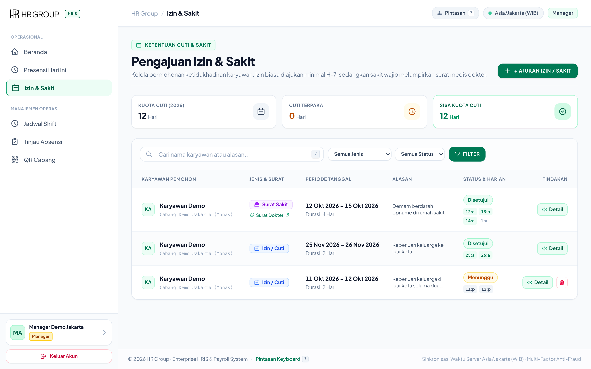
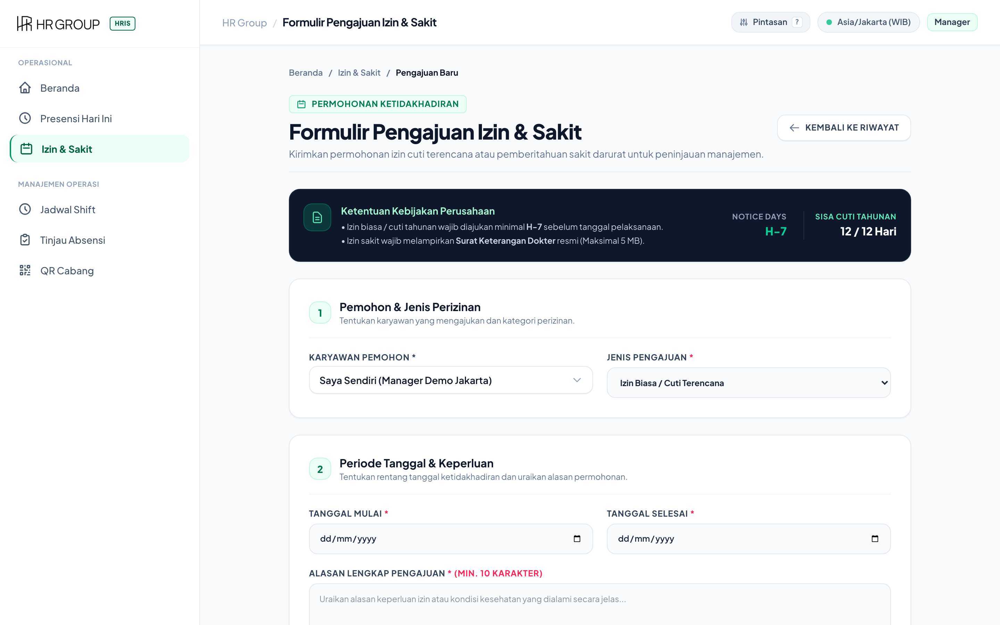
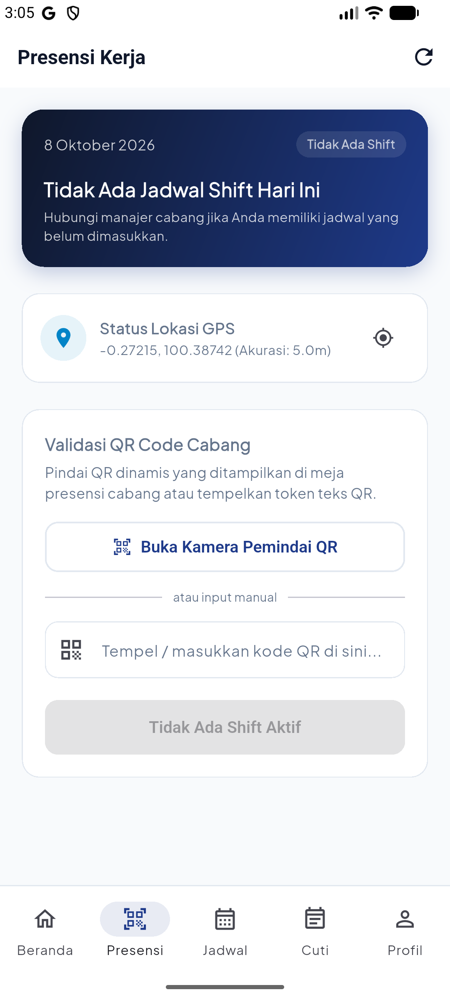
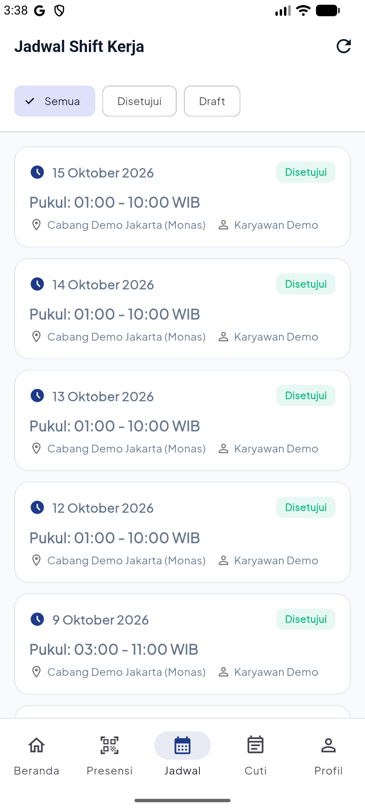

Petunjuk operasional praktis pimpinan cabang: Menampilkan QR Code Presensi Dinamis (Rotasi 30 Detik), Membuat Jadwal Shift Staf, Menyetujui Laporan Kendala Presensi, dan Otorisasi Izin/Cuti Tim Cabang.

manager@example.test).
http://127.0.0.1:8003/branch-qr.
08:00), dan Jam Selesai (contoh: 17:00).


Pending.


Jika monitor PC kantor cabang mati listrik, buka aplikasi mobile di ponsel Anda → Masuk ke menu Manager QR → Tampilkan layar ponsel Anda agar dapat discan oleh staf lain untuk absen masuk dan pulang.